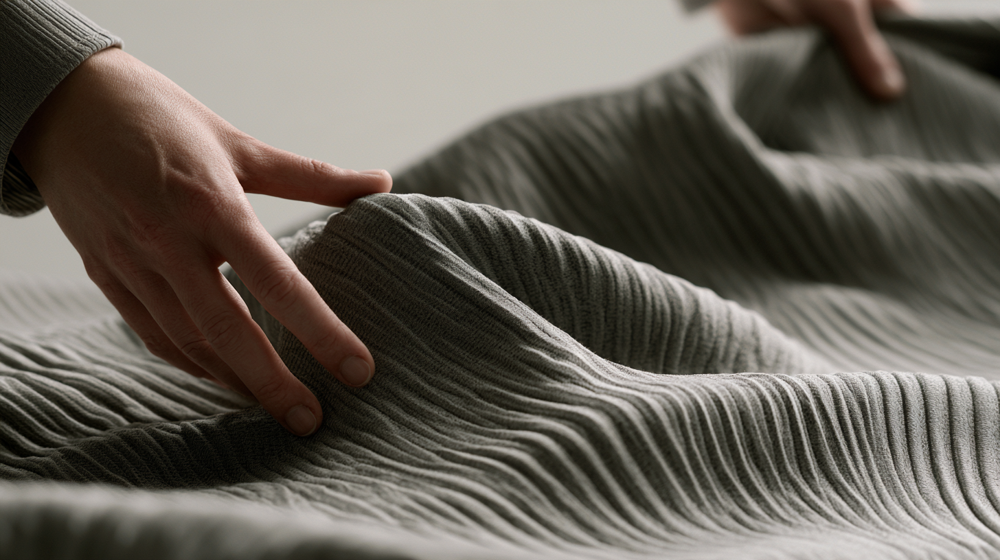
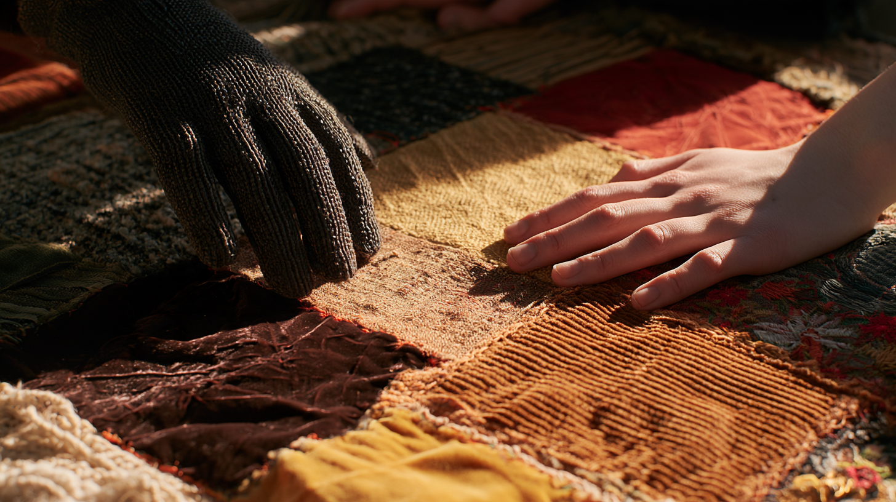

The Material Interface
What if computation stopped asking us to touch glass and learned the physical language of the things we already touch?

The thought
I want the pillow next to me to be computational space. I want my shirt to be the computational surface.
Not because either needs a screen. Almost the opposite.
Fabric already has an interaction language. We press it, fold it, pull it, bunch it, smooth it, wrap ourselves in it and feel its temperature and texture without looking. Our hands understand these materials before an interface explains anything.
That makes the material itself interesting—not as a place to hide another display, but as a possible input and output.
Already learned
A touchscreen gives every action the same physical vocabulary: tap, swipe, pinch. Material is much richer. Pressure has degree. A fold has direction. A squeeze has duration. A surface can stretch, resist, warm, cool, vibrate, soften or change shape.
Much of that interaction can happen without vision. You can manipulate an object in the dark with your hands, intuitively, through proprioception. Physical effort can have a digital outcome without first being translated into a button on a screen.
The important shift is not turning fabric into a computer. It is allowing computation to inhabit behaviors fabric already has.
Not technology-shaped
The images became more convincing as the technology disappeared. Texture, warmth, movement, layering, softness and intimacy carried the idea better than LEDs, screens or futuristic effects.
That feels like a useful constraint. If an object has to announce that it is smart before you know how to use it, we may still be designing the computer rather than the experience.
A pillow might answer pressure with warmth. Clothing might respond to a squeeze or fold. A glove could make the hand itself a sensing surface. A patchwork textile could give different regions distinct physical behaviors. None of those need to look electronic.

The provocation
We have spent decades teaching people the language of computers.
Perhaps the more interesting direction is teaching computers the language of materials people already understand.
Then computation does not have to live in a device we stop what we are doing to operate. It can exist in the objects already under our hands, against our skin and around our bodies.
A stopping point
Perhaps the future interface isn't a new object.
Perhaps computation learns the language of the objects we already know how to use.